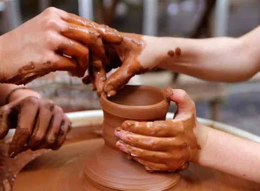

Discover our handcrafted pottery services designed to bring elegance, creativity, and tradition into your home. Every piece is carefully made by skilled artisans using premium natural clay.

We provide handcrafted pottery services that blend traditional craftsmanship with modern designs for homes, gardens, and special occasions.
Beautiful handcrafted pots, vases and decorative clay products made by skilled artisans.
Read MorePersonalized pottery designed according to your style, colors and custom requirements.
Read MorePremium handcrafted gifts for weddings, anniversaries, birthdays and festivals.
Read MoreWe are committed to delivering handcrafted pottery with exceptional quality, timeless designs, and unmatched customer satisfaction.
Every pottery piece is carefully handmade by skilled artisans with attention to every detail.
We use premium natural clay and environmentally friendly production methods.
Every product is inspected to ensure durability, beauty and long-lasting performance.
Secure packaging and reliable delivery ensure your pottery reaches you safely.
From your first idea to the final handcrafted product, every step is completed with care, creativity, and attention to detail.
Share your ideas, preferences, and requirements with our pottery experts.
We prepare sketches and select the best materials for your custom pottery.
Skilled artisans carefully shape every piece by hand using premium natural clay.
Each product is fired, polished, and finished for strength and beauty.
Every pottery item is securely packed to prevent damage during shipping.
Your handcrafted pottery is delivered safely to your doorstep, ready to be enjoyed.
Looking for unique handcrafted pottery or a custom design? Our artisans are ready to transform your ideas into timeless ceramic creations.